Mercosur
Southern Common Market
| |||||||
|---|---|---|---|---|---|---|---|
| Motto: [citation needed]
| |||||||
Green: full members. Red: suspended members. | |||||||
| Headquarters | Montevideo | ||||||
| Largest city | São Paulo | ||||||
| Official languages |
| ||||||
| Type | Intergovernmental organization and customs union | ||||||
| Membership |
1 suspended 2 observers | ||||||
| Leaders | |||||||
| Santiago Peña | |||||||
| Legislature | Parlasur | ||||||
| Formation | |||||||
• Iguaçú Declaration | 30 November 1985 | ||||||
• Buenos Aires Act | 6 July 1990 | ||||||
| 26 March 1991 | |||||||
| 16 December 1994 | |||||||
| Area | |||||||
• Total | 14,869,775[1] km2 (5,741,252 sq mi) (2ndb) | ||||||
• Water (%) | 1.0 | ||||||
| Population | |||||||
• 2024 estimate | |||||||
• Density | 23/km2 (59.6/sq mi) (204thb) | ||||||
| GDP (PPP) | 2022 estimate | ||||||
• Total | |||||||
• Per capita | US$18,987[3] (78thb) | ||||||
| GDP (nominal) | 2022 estimate | ||||||
• Total | |||||||
• Per capita | US$9,643[3] (79thb) | ||||||
| HDI (2023) | high (73tha) | ||||||
| Currency | |||||||
| Time zone | UTC-2 to UTC-5 | ||||||
| Date format | dd/mm/yyyy (CE) | ||||||
Website www | |||||||
| |||||||
{kind=link}
.svg){kind=link}
The Southern Common Market,[a] commonly known by Spanish abbreviation Mercosur, and Portuguese Mercosul, is a South American trade bloc established by the Treaty of Asunción in 1991 and Protocol of Ouro Preto in 1994. Its full members are Argentina, Bolivia, Brazil, Paraguay and Uruguay. Venezuela is a full member but has been suspended since 1 December 2016. Associate countries are, Chile, Colombia, Ecuador, Guyana, Peru, and Suriname.[5] Bolivia became a full member on July 8, 2024.[6]
Mercosur's origins are linked to the discussions for the constitution of a regional economic market for Latin America, which go back to the treaty that established the Latin American Free Trade Association in 1960, which was succeeded by the Latin American Integration Association in the 1980s. At the time, Argentina and Brazil made progress in the matter, signing the Iguaçu Declaration (1985), which established a bilateral commission, which was followed by a series of trade agreements the following year. The Integration, Cooperation and Development Treaty, signed between both countries in 1988, set the goal of establishing a common market, which other Latin American countries could join. Paraguay and Uruguay joined the process and the four countries became signatories to the Treaty of Asunción (1991), which established the Southern Common Market, a trade alliance aimed at boosting the regional economy, moving goods, people among themselves, workforce and capital. Initially a free trade zone was established, in which the signatory countries would not tax or restrict each other's imports. As of 1 January 1995, this area became a customs union, in which all signatories could charge the same quotas on imports from other countries (common external tariff). The following year, Bolivia and Chile acquired membership status. Other Latin American nations have expressed interest in joining the group.
Mercosur's purpose is to promote free trade and the fluid movement of goods, people, and currency. Since its foundation, Mercosur's functions have been updated and amended many times; it currently confines itself to a customs union, in which there is free intra-zone trade and a common trade policy between member countries. In 2023, the Mercosur had generated a nominal gross domestic product (GDP) (PPP) of around 5.7 trillion US dollars, placing the bloc as the 5th largest economy in the world. The bloc places high on the human development index.
History
[edit]Background
[edit]{kind=link}
Before the independence of the South American countries, most of their commercial and political ties were mediated by the Spanish Empire, which prohibited significant trade with Brazil. In the 19th century, the process of political emancipation in South America accentuated the various competing interests of the countries of the region. They often found themselves at war, such as the Cisplatine War, the independence of the Republic of Uruguay, the Uruguayan Great War, the Ragamuffin War, the dispute between unitaries and federalists in Argentina and the Paraguayan War.
In 1941, in the middle of the Second World War, Brazil and Argentina for the first time tried to create a Customs Union between their economies. However, this did not happen due to the countries' diplomatic differences in relation to Axis policies, after the attack on Pearl Harbor. With the end of the war, the need for interaction between nations became imminent and, consequently, economic blocs formed. In Latin America, however, there was no union that obtained satisfactory results.
Foz do Iguaçu Declaration
[edit].jpg){kind=link}
In December 1985, Brazilian President José Sarney and Argentine President Raúl Alfonsín signed the Iguaçu Declaration, the basis for economic integration of the so-called Southern Cone. Both countries had just come out of a dictatorial period and were facing the need to redirect their economies to the outside and globalized world.[8]
Both countries had contracted a large external debt during the period of the military governments and did not enjoy credit abroad. There was a great need for investment in the countries, but no money. This common situation made them both realize the mutual need. Shortly after the signing of the Iguaçu Declaration in February 1986, Argentina declared its intention of a "preferential association" with Brazil. In a private home in Don Torcuato, there was a meeting to discuss the matter. The discussion, lasting two days, took place in an atmosphere of exchanging ideas and stating positions regarding the status of the area's economy.
After a few weeks, Brazil invited Argentina to a similar meeting, in Itaipava, also in a private residence. This signaled acceptance of the Argentine initiative and the formation of an agreement, with the objective of promoting the economic development of both countries and integrating them into the world. Out of this meeting came the Argentina-Brazil Integration and Economics Cooperation Program or PICE (Portuguese: Programa de Integração e Cooperação Econômica Argentina-Brasil, Spanish: Programa de Integración y Cooperación Económica Argentina-Brasil).[9] Protocol Number 20 of the program proposed the Gaucho as a currency for regional trade.[10] For many, the idea of integration in South America seemed more like an abstraction, owing to various unsuccessful experiences in the past. However, this was perceived as different.[11]
The Buenos Aires Act
[edit]On 6 July 1990, the President of Brazil, Fernando Collor, and the President of Argentina, Carlos Menem, signed the Buenos Aires Act[12] aimed at total customs integration between the two countries. It was decided that all measures for the construction of the customs union should be completed by 31 December 1994.[13] To ensure compliance with the deadlines, the Binational Working Group was created, the body whose responsibility was to define methods for creating the common market between the two nations. In September, the governments of Paraguay and Uruguay showed a strong interest in the regional integration process, leading to the full perception by the signatories that a more comprehensive treaty was needed.[14]
Founding
[edit]{kind=link}
Mercosur was finally established in 1991 by the Treaty of Asunción, based on the Buenos Aires Act, the Treaty of Asunción defined rules and conditions for the creation of a free trade zone among its four signatories. Likewise, it was decided that all measures for the construction of the common market should be completed by 31 December 1994 with the amendment of the Treaty of Ouro Preto.[15] In 2001, celebrating the 10th anniversary of the bloc's creation, the Mercosur flag was hoisted for the first time at Mercosur's headquarters in Montevideo.
The main implications of this free trade zone are:
- The free movement of goods, services and productive factors between countries, through the elimination of customs duties and non-tariff restrictions on the movement of goods and any other measure to the same effect, with the establishment of a common external tariff and the adoption of a common commercial policy towards third countries or economic blocs;
- Products originating in the territory of a signatory country will have, in another signatory country, the same treatment applied to products of national origin;
- The coordination of foreign trade, agricultural, industrial, fiscal, monetary, foreign exchange and capital policies, of others that are agreed, in order to ensure adequate conditions of competition between members, with the commitment of these countries to harmonize their legislation, especially in areas of general importance, to strengthen the integration process;
- In relations with non-signatory countries, members of the bloc will ensure equal conditions of trade. In this way, they will apply their national laws to inhibit imports whose prices are influenced by subsidies, dumping or any other unfair practice. At the same time, the bloc's countries will coordinate their respective national policies in order to develop common rules on trade competition.
It was defined that during the transition period, the signatory countries would adopt a general regime of origin, a system for resolving disputes and safeguard clauses. To ensure order and compliance with deadlines, two institutional bodies were created:
- Common Market Group: a body formed by four full members and four alternate members from each country, from the respective Ministry of Foreign Affairs, Ministry of Economy and Central Bank. Until the creation of the Arbitral Tribunals, the Common Market Group was the main authority in resolving disputes;
- Common Market Council: the institution with the highest authority in the treaty, created to manage political decisions and ensure compliance with established deadlines.
The Treaty of Asunción also decided that the accession of a new member, in order to be effective, must be approved by legislative decree in all signatory countries. Otherwise, the membership process will be invalid.
The founding of the Mercosur Parliament was agreed upon at the December 2004 presidential summit. Up to 2010 it was planned to have 18 representatives from each country, regardless of population.[16]
Venezuela adhesion and suspension of Paraguay
[edit].jpg){kind=link}
Venezuela's history in Mercosur began on 16 December 2003, during a Mercosur summit held in Montevideo, when the Mercosur Economic Complementation Agreement with Colombia, Ecuador and Venezuela was signed. This agreement established a timetable for the creation of a free trade zone among the signatory states and the full members of Mercosur, with a gradual reduction in tariffs. In this way, these countries were successful in negotiations for the formation of a free trade zone with Mercosur, since an economic complementation agreement, with full compliance with its schedule, is the item required for the rise of a new associate. However, on 8 July 2004, Venezuela was elevated to associate member status, without even completing the schedule agreed with the Common Market Council.[17][18][19] The following year, the bloc recognized it as an associated nation in the process of accession, which in practice meant that the state had a voice, but not a vote.
The Caribbean country's Accession Protocol was signed in 2006 by all presidents of countries in the bloc. Subsequently, the Uruguayan and Argentine congresses approved the entry of the new member. The Brazilian congress did so only in December 2009. However, the Paraguayan congress did not approve it and, therefore, made it impossible for the Caribbean nation to fully join. Subsequently, on 29 June 2012, in response to Fernando Lugo's summary dismissal of the presidency, the Mercosur presidents decreed the Paraguayan suspension until the next presidential election, in April 2013. A month later, the bloc presidents acknowledged their adhesion of Venezuela and several trade agreements have been signed. It was suggested that the decision could be reversed with the Paraguayan return by exercising its veto power, which was not the case.[20] The decision was the subject of controversy. For some economists, Venezuela's acceptance as a full member of Mercosur expands the bloc's economic importance and opens up new business and investment opportunities. However, for others, the decision was seen as hasty, imposed by the governments of Brazil and Argentina and motivated purely by political interests.
Bolivian membership status
[edit].jpg){kind=link}
{kind=link}
On 7 December 2012, Bolivian President Evo Morales signed a protocol aimed at accession to full membership in the bloc.[21] Such a proposal requires review and legislative approval.[22] On 7 July 2015, the heads of Mercosur having decided to accept Bolivia's request to become a full member country, Bolivian president Evo Morales signed the Brasilia protocol.[23] However, full membership required all members states to ratify the procotol, which was completed in December 2023.[24][25] That left only Bolivia's internal ratification process to be completed before it became a full member which came to fruition in July 2024.[26][27][28]
Bolivia will be required to adjust its law in accordance with Mercosur rules within four years from full membership.[24][25]
Suspension of Venezuela
[edit]In August 2016, the presidents of Brazil, Argentina, and Paraguay, while present in Rio de Janeiro for the Olympic Games, met to discuss suspending Venezuela from Mercosur. The three countries were in doubt about whether Venezuela was complying with the union's requirements for full membership, citing human rights violations among other issues.[29] In fact, Venezuela was rejected from assuming the presidency of Mercosur by those three countries, prompting a dispute that continued to the end of the year.[citation needed]
On 21 November 2016, Paraguayan Foreign Minister Eladio Loizaga announced that Venezuela would be suspended in December 2016 after the nation was given a three-month period to reform its laws to abide to Mercosur requirements, with Mercosur noting that "rules governing trade, politics, democracy and human rights" needed to be overhauled in Venezuela.[30] On 1 December 2016, Venezuela was suspended from Mercosur.[31]
On 5 August 2017, the foreign ministers of Argentina, Paraguay, Uruguay and Brazil affirmed that Venezuela's membership in Mercosur is suspended indefinitely in response to the "rupture of the democratic order" in that country following the 30 July 2017 Constituent Assembly elections. The bloc by-laws have no provision for expulsion. However, trade and migration policies stay without changes to avoid aggravating the social crisis.[32] Brazilian Foreign Minister Aloysio Nunes said that Venezuela will remain suspended until the country "re-establishes democracy."[33]
In January 2019, the opposition-majority National Assembly declared incumbent Nicolás Maduro's 2018 reelection invalid, entering a presidential crisis.[34] During a July 2019 summit in Santa Fe, Argentina, the bloc called for "free, fair and transparent presidential elections, as soon as possible" in Venezuela. The presidents of the four member countries signed a statement expressing concern "for the grave crisis that Venezuela is going through, which is seriously affecting the humanitarian situation and human rights."[35]
In 2020, however, Maduro's United Socialist Party of Venezuela and allied parties claimed to have captured 67 percent of seats in the National Assembly, but that election was also disputed by EU and U.S. officials. Nevertheless, since then Maduro has exercised majority control of the Venezuelan parliament, displacing Juan Guaidó from his oppositional presidency, and thus making a rejoining of Venezuela to Mercosur more critical.[36]
Free Trade Agreements with EU and EAEU
[edit]{kind=link}
In late April 2023, newly elected President of Brazil Luiz Inácio Lula da Silva pressed new agreements between Mercosur and the EU to stimulate economic development in South America. Previously, EU officials doubted such an agreement, and did not ratify it due to the destruction of rainforest habitat in the Amazon region. At the same time, talks between Lula and Chinese President Xi Jinping had competed with the expected free trade agreement to the European trade zone. As talks progressed, other factors came into play, such as the recent visit by Russian foreign minister Sergey Lavrov to the Brazilian nation the same month; the latter is working on the admission of Brazil and Mercosur to the competing Eurasian Economic Union (EAEU). Meanwhile, Venezuela that has been shut out of its Mercosur membership in 2016 due to accusations of undemocratic behavior, is attempting to approach the agreement again with a decree to reform the common nomenclature and to revamp its quality standards for export.[37][38][39]
Mercosur Waterways diplomatic crisis
[edit]In July 2023, a crisis broke out between Argentina and Paraguay, Bolivia, Uruguay and Brazil over the free navigability of the rivers in the Río de la Plata Basin.[40]
Geography
[edit]The territory of Mercosur consists of the combined territories of six of the 12 countries of South America and their population. Including the overseas territories of member states, Mercosur experiences most types of climate from Antarctic to tropical, rendering meteorological averages for Mercosur as a whole meaningless. The majority of the population lives in areas with a subtropical climate (Uruguay, Southern Paraguay, Northeastern and Center Argentina and Southern and Southeastern Brazil), or a tropical climate (Venezuela and Northeastern Brazil). The Mercosur member states are home to the world's highest uninterrupted waterfall, Angel Falls in Venezuela; the largest river by volume, the Amazon River in Brazil; the longest mountain range, the Andes (whose highest mountain is Aconcagua at 6,962 m or 22,841 ft in Argentina); the largest rainforest, the Amazon Rainforest in Brazil; and much more if we take the associated members into account, such as the highest capital city, La Paz, Bolivia; the highest commercially navigable lake in the world, Lake Titicaca in Peru; the driest non-polar place on earth, the Atacama Desert;[41][42][43] and, excluding research stations in Antarctica, the world's southernmost permanently inhabited community, Puerto Toro, Chile.
-
Mount Aconcagua in Argentina
-
The Amazon rainforest in Brazil
-
Lake Iporá in Uruguay
-
Gran Chaco in Paraguay
-
The Salto Ángel falls in Venezuela
{kind=link}
{kind=link}
{kind=link}
{kind=link}
{kind=link}
One Mercosur full member, Argentina, has a claim to Antarctica called Argentine Antarctica (part of the province of Tierra del Fuego) which partially overlaps with the claim of Mercosur-associated state Chile, namely Chilean Antarctica. Brazil does not formally claim any part of Antarctic territory, but has a "zone of interest" called Brazilian Antarctica which overlaps Argentina's claim.
Member states
[edit]{kind=link}
Mercosur is composed of six sovereign member states: Argentina, Bolivia, Brazil, Paraguay, Uruguay and Venezuela (suspended since December 2016); six associated states: Suriname, Guyana, Colombia, Ecuador, Peru and Chile; plus two observer states: Mexico and New Zealand.
Following the impeachment of President Fernando Lugo by the Paraguayan Senate, Paraguay was suspended from Mercosur. Shortly afterwards, Venezuela was admitted as a full member on 31 July 2012.[44] Venezuela had four years to fully adapt to the trade bloc regulations and failed to do so, with the nation being suspended from Mercosur on 1 December 2016.[31]
Member States
[edit]| Arms | Flag | Country or territory | Capital | Area[45] | Population (2021)[46][47] |
Population density |
HDI (2022)[48] |
|---|---|---|---|---|---|---|---|
| Argentina | Buenos Aires | 2,766,890 km2 (1,068,300 sq mi) |
45,276,780 | 16.03/km2 (41.5/sq mi) |
0.849 | ||
| 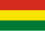 | Bolivia[49] | La Paz, Sucre[note 1] |
1,098,580 km2 (424,160 sq mi) |
12,079,472 | 10.3/km2 (27/sq mi) |
0.698 | |
| 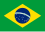 | Brazil | Brasília | 8,514,877 km2 (3,287,612 sq mi) |
214,326,223 | 24.6/km2 (64/sq mi) |
0.760 | |
| Paraguay | Asunción | 406,750 km2 (157,050 sq mi) |
6,703,799 | 17.1/km2 (44/sq mi) |
0.731 | ||
| 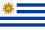 | Uruguay | Montevideo | 176,220 km2 (68,040 sq mi) |
3,426,260 | 19.57/km2 (50.7/sq mi) |
0.830 | |
| 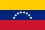 | Venezuela (suspended member)[note 2] |
Caracas | 916,445 km2 (353,841 sq mi) |
28,199,867 | 31.52/km2 (81.6/sq mi) |
0.699 | |
| Total | 12,963,317 km2 (5,005,165 sq mi) |
281,812,534 | 21.74/km2 (56.3/sq mi) |
0.774 | |||
{kind=link}
{kind=link}
{kind=link}
{kind=link}
{kind=link}
{kind=link}
Associated States
[edit]| Arms | Flag | Country or territory | Capital | Area[45] | Population (2021)[46][47] |
Population density |
HDI (2022)[48] |
|---|---|---|---|---|---|---|---|
| Chile | Santiago | 756,950 km2 (292,260 sq mi) |
19,493,184 | 24.74/km2 (64.1/sq mi) |
0.860 | ||
| 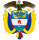 | 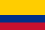 | Colombia | Bogotá | 1,141,748 km2 (440,831 sq mi) |
51,516,562 | 43.49/km2 (112.6/sq mi) |
0.758 |
| 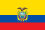 | Ecuador | Quito | 283,560 km2 (109,480 sq mi) |
17,797,737 | 60.24/km2 (156.0/sq mi) |
0.765 | |
| 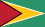 | Guyana | Georgetown | 214,999 km2 (83,012 sq mi) |
804,567 | 3.62/km2 (9.4/sq mi) |
0.742 | |
| 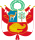 | Peru | Lima | 1,285,220 km2 (496,230 sq mi) |
33,715,471 | 24.89/km2 (64.5/sq mi) |
0.762 | |
| 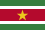 | Suriname | Paramaribo | 163,270 km2 (63,040 sq mi) |
612,985 | 3.52/km2 (9.1/sq mi) |
0.690 |
{kind=link}
{kind=link}
{kind=link}
{kind=link}
{kind=link}
{kind=link}
In July 2024, Panama president José Raúl Mulino said his country was formally applying to join Mercosur as an associate member.[50]
Observer States
[edit]| Arms | Flag | Country or territory | Capital | Area[45] | Population (2021)[46][47] |
Population density |
HDI (2022)[48] |
|---|---|---|---|---|---|---|---|
| Mexico | Mexico City | 1,972,550 km2 (761,610 sq mi) |
126,705,138 | 63.97/km2 (165.7/sq mi) |
0.781 | ||
| New Zealand | Wellington | 268,021 km2 (103,483 sq mi) |
5,129,727 | 19.14/km2 (49.6/sq mi) |
0.939 |
{kind=link}
{kind=link}
Directly subordinated to the Common Market Group, the work subgroups draw up the minutes of the decisions to submit for the consideration of the council, and study specific Mercosur concerns. The work subgroups are:
- Commercial matters
- Customs matters
- Technical standards
- Tax and monetary policies relating to trade
- Land transport
- Sea transport
- Industrial and technology policies
- Agricultural policy
- Energy policy
- Coordination of macroeconomic policies
- Labor, employment and social security matters
Work subgroups are held quarterly, alternating in every member state, in alphabetical order, or at the Common Market Group Administrative Office. Activities are carried out by the Work Subgroups in two stages: preparatory and conclusive. In the preparatory stage, members of the Work Subgroups may request the participation of representatives from the private sector of each member state. The decision-making stage is reserved exclusively for official representatives of the member states. The delegations of representatives from the private sector in the preparatory stage of the Work Subgroup activities will have a maximum of three representatives for each member state directly involved in any of the stages of the production, distribution or consumption process for the products that fall within the scope of the subgroup's activities.,
Demographics
[edit]Population
[edit]Mercosur has a population of 284 million among its full member states. The region has several areas of sparse demographics such as tropical forests and deserts, but it is also highly urbanized with the presence of two alpha cities – São Paulo and Buenos Aires – and several beta cities such as Montevideo, Rio de Janeiro, Brasilia, etc. The population is diverse, comprising people of European, Africans and Indigenous descent. People of Afro-Latin American descent tend to be concentrated in Brazil and Uruguay, with a smaller, but historic Afro-Argentine community in Argentina and an emerging population in Chile, the latter largely of Haitian origin. There is a high percentage of mestizos that vary greatly in composition by place. There is also a smaller population of Asians, notably in Brazil. The white population forms a majority in Argentina and Uruguay and represents about 45 percent in Brazil. Mestizos form the majority population in Paraguay, making it distinct from its immediate neighbors.[51] Almost all Mercosur nations have significant indigenous American populations, especially in Paraguay (Guaraní is a national language in the country along with Spanish, and almost all Paraguayans have Guaraní genetic ancestry), Argentina (especially in the Northwest and Southwest of The country), Brazil (in the Northern and Northwest Amazonian states of the nation, where Native American tribes have vast reservation lands).
Urbanization
[edit]| Rank | City name | Member state | Pop. | Rank | City name | Member state | Pop. | ||
|---|---|---|---|---|---|---|---|---|---|
São Paulo |
1 | São Paulo | Brazil | 21,090,792 | 11 | Fortaleza | Brazil | 3,985,297 | 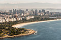 Rio de Janeiro |
| 2 | Buenos Aires | Argentina | 13,693,657 | 12 | Salvador | Brazil | 3,953,290 | ||
| 3 | Rio de Janeiro | Brazil | 13,131,431 | 13 | Recife | Brazil | 3,914,397 | ||
| 4 | Bogotá | Colombia | 10,777,931 | 14 | Medellín | Colombia | 3,777,009 | ||
| 5 | Lima | Peru | 9,904,727 | 15 | Curitiba | Brazil | 3,502,804 | ||
| 6 | Santiago | Chile | 6,683,852 | 16 | Campinas | Brazil | 3,094,181 | ||
| 7 | Belo Horizonte | Brazil | 5,829,923 | 17 | Guayaquil | Ecuador | 2,952,159 | ||
| 8 | Caracas | Venezuela | 5,322,310 | 18 | Cali | Colombia | 2,911,278 | ||
| 9 | Porto Alegre | Brazil | 4,258,926 | 19 | Quito | Ecuador | 2,653,330 | ||
| 10 | Brasília | Brazil | 4,201,737 | 20 | Maracaibo | Venezuela | 2,576,836 | ||
.jpg){kind=link}
.jpg){kind=link}
{kind=link}
{kind=link}
Languages
[edit]| Language | Native speakers | Official in countries |
|---|---|---|
| Portuguese | 71% | 1 |
| Spanish | 26% | 4 |
| Guarani | 3% | 1 |
According to an article in the New York Times, Portuguese, Spanish and Guarani are the three official languages of the Mercosur, as they are the official languages of the five full members – Portuguese is the official language of Brazil, Spanish is the official language of all other full member countries, and Guarani is the co-official language of Paraguay and Argentina's province of Corrientes. Guarani is the most commonly spoken language in Paraguay.[53] However, the official languages of its constituent states are not necessarily the official languages of the Mercosur organisation itself, which only recognizes Portuguese and Spanish. That Guarani is an official language there has been described as a common fallacy.[54] Mercosur does not provide all, or even most, services in Guaraní. The official website is in Spanish, Portuguese and English, and almost all official summits are only held in Spanish and Portuguese. Important documents, such as legislation, are translated into Portuguese and Spanish.
Currently, among the full members, Portuguese is the most spoken language, with over 214 million native speakers as of 2021, while Spanish accounts for 83 million speakers approximately. Even though language policy is the responsibility of member states, Mercosur institutions promote multilingualism among its citizens, and while Brazil has enforced Spanish as a foreign language to be taught at school, Argentina and Venezuela have done so with Portuguese.
Merchandise trade
[edit]Intra-Mercosur merchandise trade (excluding Venezuela) grew from US$10 billion at the inception of the trade bloc in 1991,[55] to US$88 billion in 2010; Brazil and Argentina each accounted for 43% of this total.[56] The trade balance within the bloc has historically been tilted toward Brazil,[55] which recorded an intra-Mercosur balance of over US$5 billion in 2010.[56][57] Trade within Mercosur amounted to only 16% of the four countries' total merchandise trade in 2010, however; trade with the European Union (20%), China (14%), and the United States (11%) was of comparable importance.[56] Exports from the bloc are highly diversified, and include a variety of agricultural, industrial, and energy goods. Merchandise trade with the rest of the world in 2010 resulted in a surplus for Mercosur of nearly US$7 billion; trade in services, however, was in deficit by over US$28 billion.[56] The EU and China maintained a nearly balanced merchandise trade with Mercosur in 2010, while the United States reaped a surplus of over US$14 billion; Mercosur, in turn, earned significant surpluses (over US$4 billion each in 2010) in its trade with Chile and Venezuela.[56] The latter became a full member in 2012.
| Country | Population in 2018[46][47] (In thousands) |
GDP (nominal) in 2018[58] (USD millions) | GDP (nominal) per capita[58] | GDP (PPP) in 2018 (USD millions) | GDP (PPP) per capita | Human Development Index score (2019)[4] | Merchandise exports ($ billions), 2011[59] |
Merchandise imports ($ billions), 2011[59] |
Exports to Mercosur (% of each, 2010)[56] |
Imports from Mercosur (% of each, 2010)[56] |
|---|---|---|---|---|---|---|---|---|---|---|
| 44,570 | 518,092 | 14,400 | 920,248 | 20,787 | 0.845 | 84.3 | 73.9 | 25.2 | 33.6 | |
| 209,218 | 1,868,184 | 9,821 | 3,240,524 | 15,484 | 0.765 | 399.8 | 363.6 | 11.1 | 9.0 | |
| 7,050 | 40,714 | 5,592 | 97,163 | 13,584 | 0.728 | 9.8 | 12.1 | 29.0 | 42.0 | |
| 3,506 | 60,180 | 17,120 | 77,992 | 22,563 | 0.817 | 8.0 | 10.7 | 33.8 | 48.8 | |
| Total | 264,347 | 3,396,213 | 11,887 | 5,404,156 | 19,569 | 0.788 | 501.9 | 460.3 | 24.77 | 33.35 |
Economic development
[edit]Internal trade in the Mercosur block has grown from $4 billion in 1990 to $41 billion in 2022.[60][61]
Structure
[edit].jpg){kind=link}
The Asunción Treaty and Ouro Preto Protocol established the basis for the institutional Mercosur structure, creating the Common Market Council and the Common Market Group, both of which function at the outset of the transition phase. As provided for in this Treaty, before establishing the common market the member nations must call a special meeting to determine the definitive institutional structure for the public agencies managing Mercosur, as well as define the specific functions of each agency and the decision-making process.
Common Market Council
[edit]The council is the highest-level agency of Mercosur with the authority to conduct its policy, and responsibility for compliance with the objects and time frames set forth in the Asuncion Treaty. The council is composed of the Ministers of Foreign Affairs and the Economy (or the equivalent) of all five countries. Member states preside over the Council in rotating alphabetical order, for six-month periods. Meetings: Council members shall meet whenever necessary, but at least once a year. The presidents of the member nations shall partake of the annual Common Market Council meeting whenever possible. Decision Making: Council decisions shall be made by consensus, with representation of all member states.
Common Market Group
[edit]{kind=link}
The Group is the executive body of Mercosur, and is coordinated by the Ministries of Foreign Affairs of the member states. Its basic duties are to cause compliance with the Asuncion Treaty and to take resolutions required for implementation of the decisions made by the council. Furthermore, it can initiate practical measures for trade opening, coordination of macroeconomic policies, and negotiation of agreements with nonmember states and international agencies, participating when need be in resolution of controversies under Mercosur. It has the authority to organize, coordinate and supervise Work Subgroups and to call special meetings to deal with issues of interest. Composition: The Common Market Group shall be made up of four permanent members and four alternates from each member state, representing the following public agencies: (i) the Ministry of Foreign Affairs; (ii) the Ministry of Economy, or the equivalent (from industry, foreign affairs and/or economic coordination); and (iii) the Central Bank. The members of the Common Market Group appointed by a given member state will constitute the National Section of the Common Market Group for that particular nation. Meetings: The Common Market Group will meet ordinarily at least once every quarter in the member states, in rotating alphabetical order. Special meetings may be freely called at any time, at any previously scheduled place. The meetings will be coordinated by the Head of the Delegation of the host member state. Decision Making: Common Market Group decisions shall be made by consensus, with the representation of all member states. The official Mercosur languages will be Portuguese and Spanish, and the official version of all work papers will be prepared in the language of the country hosting the meeting.
Administrative and socioeconomic
[edit]The Administrative Office will keep documents and issue the Mercosur official bulletin in both Portuguese and Spanish, and will also be charged with communicating the activities of the Common Market Group so as to allow for the maximum disclosure of decisions and the relevant documentation. The Socioeconomic Advisory Forum is consultative by nature, and represents the various socioeconomic sectors of the member nations.
Work subgroups
[edit]Directly subordinated to the Common Market Group, the Work Subgroups draw up the minutes of the decisions to submit for the consideration of the council, and conduct studies on specific Mercosur concerns. The work subgroups are the following: commercial matters; customs matters; technical standards; tax and monetary policies relating to trade; land transport; sea transport; industrial and technology policies; agricultural policy; energy policy; coordination of macroeconomic policies; and labor, employment and social security matters. meetings. The meetings of the Work subgroups will be held quarterly, alternating in every member state, in alphabetical order, or at the Common Market Group Administrative Office. Activities will be carried out by the Work Subgroups in two stages: preparatory and conclusive. In the preparatory stage, the members of the Work Subgroups may request the participation of representatives from the private sector of each member state. The decision-making stage is reserved exclusively for official representatives of the member states. The delegations of representatives from the private sector in the preparatory stage of the Work Subgroup activities will have a maximum of three representatives for each member state directly involved in any of the stages of the production, distribution or consumption process for the products that fall within the scope of the subgroup's activities.
Joint Parliamentary Committee
[edit]{kind=link}
The Committee will have both an advisory and decision-making nature; with powers to submit proposals as well. It will be competent, inter alia, to: follow up on the integration process and keep the respective Congresses informed; Take the necessary steps for the future instatement of a Mercosur Parliament; Organize subcommittees to examine matters relating to the integration process; Submit its recommendations to the Common Market Council and Group as to how the integration process should be conducted and Southern Common Market formed; Make the adjustments necessary to harmonize the laws of the different member states and submit them to the respective Congresses; Establish relationships with private entities in each of the member states, as well as international agencies and bureaus so as to obtain information and specialized assistance with matters of interest: Establish relationships targeting cooperation with Congresses of the nonmember nations and entities involved in regional integration schemes; Subscribe to cooperation and technical assistance accords with public and/or private entities whether domestic, supranational or international. The committee will be composed of a maximum of 64 acting parliamentary members, 16 per member state, and an equal number of alternates, appointed by the Congress to which they pertain, and with a term of office of at least two years. The meetings shall be conducted by a directors' board consisting of four presidents (one for each member state). The committee will ordinarily meet twice a year, and extraordinarily whenever summoned by any of its five presidents. Meetings are held in the territory of each member state on a successive and alternating basis. Decision Making: Meetings of the Joint Parliamentary Committee will only be valid when attended by parliamentary delegations from all member states. Decisions by the Joint Parliamentary Committee will be made by consensus vote of the majority of the members accredited by the respective Congresses of each member state. Portuguese and Spanish are the official languages of the Joint Parliamentary Committee.
Trade Commission
[edit]{kind=link}
The Trade Commission will assist the Mercosur executive body, always striving to apply the instruments of common trade policy agreed to by the member states for operation of the customs unification. The commission should also follow up on the development of issues and matters related to common trade policies, the intra-Mercosur trade and trade with other countries. The commission will have five actual members and four alternates, with each member nation's indicating a member. The Trade Commission shall exert every effort to apply common trade policy instruments such as: trade agreements with other countries or international entities; administrative/commercial product lists; final adaptation system for Mercosur customs unification; origin system; free-trade zone system, special customs areas and export processing zones; system to discourage unfair trade practices; elimination and harmonization of tariff restrictions; nonmember country safeguard systems; customs coordination and harmonization; consumer protection systems; and export incentive harmonization.
Furthermore, the trade commission should speak out regarding the issues raised by the member states regarding application and compliance with common offshore tariffs and other common trade policy instruments. The commission shall meet at least once a month, as well as whenever asked to by the Mercosur executive agency or by a member state. The commission can take decisions entailing administration and application of trade policies adopted under Southern Common Market, and whenever necessary submit proposals to the executive body regarding regulation of the areas under its authority; additionally, it can propose new guidelines or modify those in existence in Mercosur trade and customs matters. In this respect, the trade commission can propose a change in the import duty on specific items under common external tariffs, including cases referring to development of new Mercosur production activities. To better achieve its objectives, the trade commission can create technical committees targeting direction and supervision of the work it engages in. It can also adopt internal operating regulations. Proposals and decisions of the trade commission will be taken by a consensus of the representatives indicated by each member nation. Any disputes ensuing from the application, interpretation or compliance with the acts issued by the trade commission are referred to the Mercosur executive body, and should be resolved using the directives set forth in the Dispute Resolution System adopted under Southern Common Market.
International jurisdiction over contractual matters
[edit]{kind=link}
The rules on litigation jurisdiction over contractual matters will apply to disputes arising from civil or commercial international contracts between private-law legal entities or individuals provided that: They are domiciled or headquartered in different member states: At least one of the parties to the contract is domiciled or headquartered in any member state and, additionally, has made a choice of jurisdiction in favor of a court in one of the member states. In this case, there must be a reasonable connection between the jurisdiction chosen and the controversy. The scope of the application of the international jurisdiction guidelines over contractual matters excludes the following: legal relationships between bankrupt entities/individuals and their creditors and any other analogous proceedings (especially concordatas composition with creditors); matters under agreements involving family and succession law; social security contracts; administrative contracts; employment contracts; consumer sales contracts; transport contracts; insurance policies; and rights in rem.
Choice of jurisdiction
[edit]Courts in member nations to whose jurisdiction the contracted parties have agreed to submit the matter in writing will have jurisdiction to settle controversies stemming from civil or commercial international contracts.
Agreement of choice
[edit]{kind=link}
The jurisdiction can be agreed on at the time the contract is signed, during the life of the contract, or even when the dispute actually arises. The validity and effects of the choice of venue will be governed by the law of the member nations that normally have jurisdiction to hear the case, always resorting to the law most favorable to the validity of the contract. Whether or not jurisdiction is chosen, such jurisdiction will be prorogated in favor of the courts of the member state where the proceedings are in fact filed, provided the respondent voluntarily allows this in an affirmative and unfeigned way.
Subsidiary jurisdiction
[edit]{kind=link}
Should the contracted parties not agree on courts competent to settle disputes, the member state chosen by the plaintiff of the case has jurisdiction—the court of the place where the contract is to be performed, the court of the domicile of the respondent, or the court of the domicile, or headquarters of the claimant when the latter can show that it has done its part. For purposes of item (i) above the place of performance of the contract is the member state where the obligations on which the claim is based have been or should be performed, taking into consideration the following: For contracts involving certain specific items, the place where they existed at the time of contract signing; For contracts involving specific items according to their type, the place of domicile of the debtor at the time of contract signing; For contracts involving fungible items, the place of domicile of the debtor at the time of conclusion of the contract; and For service rendering contracts:
- If in regard to items, this the place where they were at the time of contract signing.
- If effectiveness is related to any special place, this is the place where they were to produce effects.
- In all other cases, this is the place of domicile of the debtor at the time of contract signing. For purposes of application of second item above for determination of the domicile of the respondent in a contractual dispute involving individuals, the following will be taken into consideration: The habitual residence: On a subsidiary basis, the central place of business; and In the absence of any such considerations, the place where found, meaning the actual residence. When dealing with a legal entity, the determination of the domicile will be based on where the administrative headquarters have been set up. The claim plaintiff can, as an alternative, file in any of the places where the legal entity has branches, establishments, agencies or any other type of representation. Legal entities headquartered in any member state that have concluded contracts with any other member state can be sued in the courts of the latter state should there be any dispute as to the construction and implementation of the obligations regulated by contract. In the event there is a codefendant, a suit on contractual matters can be adjudicated with the courts of jurisdiction in the territory of the domicile of any of the parties to the litigation. Additionally, any claims entailing personal collateral rights or intervention of nonmember states in contractual obligations can be filed with the court hearing the main proceeding.
Counterclaims
[edit]In the event of there being a counterclaim based on any act or fact that served as the basis for the main proceeding, the courts hearing the main proceeding will be competent to hear any counterclaims that may arise.
Educational integration
[edit].jpg){kind=link}
Based on the premise that education is a fundamental factor in the regional integration process, educational courses at the primary or junior high level, provided that they do not entail technical studies, will be recognized by member states as being on the same level for all member nations. Likewise, to facilitate continuing education, course certificates issued by an institution accredited in one of the member states is valid in all other member states. Nontechnical primary and junior high level studies that have not been completed are accredited by any member state, thereby allowing course conclusion in another member nation. Studies are completed using an equivalency table to determine the level achieved.
Regional technical commission
[edit]A regional technical commission harmonizes mechanisms for accreditation across member nations, and resolves any situation not be covered by the equivalency table. This commission includes delegations from the ministries of education of each member nation, and meets whenever at least two member states think it necessary. Meeting sites are established on a rotating basis. Any disputes among member states as a result of application, construction, or noncompliance regarding provisions related to education are initially resolved by direct diplomatic negotiations. Should the countries not reach an accord or only partially resolve the dispute, they resort to procedures set out in the dispute resolution system. Should the member nations enter into a bilateral convention or accord with provisions more favorable to their students, the member states in question can apply whichever provisions they consider most advantageous.
Free trade zones
[edit]This section needs additional citations for verification. (July 2017) |
{kind=link}
{kind=link}
The member nations can have commercial free-trade zones, industrial free-trade zones, export processing zones, and special customs areas, all of which target providing merchandise marketed or produced in these areas with treatment different from that afforded in their respective customs territories.[citation needed] Uruguay's Vice-president Danilo Astori said the issue of a free trade agreement with the United States must be dealt and that "opportunities must be built". He also said that "each Mercosur country should have a multiplicity of memberships. Mercosur must have joint international policies, an agreement on moderate protection from third parties and above all must have agreements with other trade blocks".[65]
Tariffs
[edit]The member states can assess merchandise from these areas with the common external tariff used for Mercosur merchandise, or, in the case of certain special products, the domestic tariff prevailing in each individual state. In this way, the products from the free-trade zones can have the more favorable tax treatment established under Southern Common Market, given to the merchandise produced in the normal customs zones of each member state or, in the case of certain special products, can have the normal customs treatment prevailing in each nation. Products coming from outside of Mercosur are highly taxed so that local companies do not feel the need to compete with large international companies.
Safeguards
[edit]Products produced or marketed in the free-trade zones of each member nation will be eligible for the safeguard system whenever this entails an increase not provided for in imports, but capable of causing damages or threatened damages to the importer country.
Incentives
[edit]In the event of the producing nation's granting special incentives for production from the free-trade zones that are not compatible with the corresponding guidelines established under the General Agreement on Tariffs and Trade (GATT), the member nation can make any adjustments needed to return the situation to equilibrium.
Creation
[edit]The member nations agreed that any free-trade zones that in August 1994 were already in operation could operate normally under Mercosur, along with any that are set up in light of legal guidelines prevailing or in course in congress during this same time period. This means that a member nation can no longer create new free-trade zones that are more privileged. Mercosur is an effective agreement for its members.
Manaus and Tierra del Fuego FTZs
[edit]This section needs to be updated. (January 2022) |
The actual implementation of Mercosur will not affect the special Manaus, Brazil, and Tierra del Fuego, Argentina, free-trade zones organized in light of their special geographic situations. These two free-trade zones may continue normal operations until 2013.
Reciprocal promotion and protection
[edit]{kind=link}
The nations subscribing to the Asunción Treaty consider that the creation and maintenance of conditions favorable to individual or corporate investment for the jurisdiction of one of the member states in the territory of another state is essential to intensify the economic cooperation targeted so as to accelerate the integration process among all four member states. In this context, Argentina, Uruguay, Paraguay and Brazil signed on 1 January 1994 in the city of Colonia del Sacramento, Uruguay, the Colonia Protocol for the Reciprocal Promotion and Protection of Mercosur Investments (Colonia Protocol). It was established in this protocol that investments under Mercosur by investors resident or domiciled in the territory of any member state will be entitled to treatment no less favorable than that accorded by the other member state to national investors or nonmember states.
Investors
[edit]For the purposes of constructing the Colonia Protocol, investors are considered to be: Individuals who are citizens of any of the member nations or that reside there on a permanent basis or are domiciled there, with due regard for legislation prevailing in such territory; Legal entities organized pursuant to the legislation of one of the member nations that are headquartered there; and Legal entities organized in the territory where the investment is made, actually and directly or indirectly controlled by the legal entities or individuals mentioned above.
Investment
[edit]The term investment includes all types of assets such as: movable or immovable property, such as rights in rem and guarantee in rem rights; shares, corporate holdings and any other type of corporate participation; credit instruments and rights that may have an economic value; intellectual property rights or materials, Including copyrights and industrial property rights such as patents, industrial drawings, trademarks, commercial names, technical procedures, know-how and goodwill; Economic concessions involving public law, such as research, cultivation, extraction or natural resource exploration concessions.
Freedom to invest
[edit].jpg){kind=link}
The nation receiving the investment cannot avail itself of unjustified or discriminatory means capable of restricting the investor's freedom to manage, maintain, use, enjoy and dispose of its investments.
Tax
[edit]The member states are not however obligated to extend to investors in the other nations signatory to the Colonia Protocol the benefits of any treatment, preference or privilege resulting from international accords relating fully or partially to tax matters.
Exceptions
[edit]In addition, the member nations can temporarily establish a list of exceptions where the new treatment will not yet prevail.
{kind=link}
In this way, the various member nations decided to except the following economic sectors:
- Argentina: ownership of real estate on the frontier strip, air transportation, naval industry, nuclear power plants, uranium mining, insurance and fishery;
- Brazil: mineral prospecting and mining; use of hydraulic energy; health care; television and radio broadcasting and telecommunications in general, acquisition or leasing of rural properties; participation in the financial intermediation, insurance, social security and capitalization systems; chartering and cabotage as well as inland navigation;
- Paraguay: ownership of real property on the frontier strip; communications, including radio and television broadcasting; air, sea and land transportation; electricity, water and telephone services; prospecting for hydrocarbons and strategic minerals; import and refining of petroleum derivatives and postal services;
- Uruguay: electricity; hydrocarbons; basic petrochemicals, atomic energy; prospecting for strategic minerals; financial intermediation; railways, telecommunications; radio broadcasting; press and audiovisual means.
Expropriation and compensation
[edit]The member nations undertook to do nothing to nationalize or expropriate investments in their territories that pertain to investors from the signatory countries, unless such measures are taken based on public need. In such case, nothing discriminatory can be done, but everything must be implemented by due legal process. Compensation for the investment holder that is expropriated or nationalized should be both adequate and effective, and made in advance, based on the real investment value determined at the time the decision is publicly announced by the proper authorities. This payment will be updated until actual payment, and the affected investor will receive interest.
Transfers
[edit]The original member state investors will be ensured free transfer of their investments and any earnings thereon. These transfers can be made in freely convertible currency, using the exchange rate prevailing on the market pursuant to the procedures established by the member state receiving the investment. Member nations cannot adopt any exchange measures restricting free transfer of the funds invested or from activities exercised in their respective territories.
Role and potential
[edit]{kind=link}
Some South Americans see Mercosur as giving the capability to combine resources to balance the activities of other global economic powers, especially the North American Free Trade Agreement (NAFTA) and the European Union.[66] The organization could also potentially pre-empt the Free Trade Area of the Americas (FTAA);[67] however, over half of the current Mercosur member countries rejected the FTAA proposal at the IV Cumbre de las Américas (IV Summit of the Americas) in Argentina in 2005.
The development of Mercosur was arguably weakened by the collapse of the Argentine economy in 2001 and it has still seen internal conflicts over trade policy, between Brazil and Argentina, Argentina and Uruguay, Paraguay and Brazil, etc. In addition, many obstacles must be addressed before the development of a common currency in Mercosur.[68]
In 2004, Mercosur signed a cooperation agreement with the Andean Community of Nations trade bloc (CAN) and they published a joint letter of intent for future negotiations towards integrating all of South America.[69] The prospect of increased political integration within the organization, as per the European Union and advocated by some, is still uncertain.[70] Bolivia, also a member of CAN and an associate member of Mercosur before the UNASUR process started, plays a crucial part in relations, says Marion Hörmann, since Bolivia is traditionally seen as a mediator between the Andean countries and the rest of South America. Regional Integration: Key Role for Bolivia
The bloc comprises a population of more than 270 million people, and the combined gross domestic product of the full-member nations is in excess of US$3.0 trillion a year (Purchasing power parity, PPP) according to International Monetary Fund (IMF) numbers, making Mercosur the fifth-largest economy in the World. It is the fourth-largest trading bloc after the European Union.[71] The problem of economic asymmetries among the partners has been addressed by many analysts reaching dissimilar conclusions. However, there is agreement that this situation is a determining factor in characterizing the evolution of MERCOSUR.[72][73]
The working of Mercosur has not met with universal approval within interested countries. Chile has to a certain extent preferred to pursue bilateral agreements with trading partners, and there have been calls from Uruguayan politicians to follow this example.[74]
FTA with third parties
[edit]{kind=link}
With the 2005 cooperation agreement with Mercosur, the Andean Community gained four new associate members: Argentina, Brazil, Paraguay, and Uruguay. These four Mercosur members were granted associate membership by the Andean Council of Foreign Ministers meeting in an enlarged session with the commission (of the Andean Community) on 7 July 2005. This move reciprocates the actions of Mercosur, which granted associate membership to all the Andean Community nations by virtue of the Economic Complementarity Agreements (Free Trade Agreements) signed between the CAN and individual Mercosur members.[75]
Mercosur signed free trade agreements with Israel in December 2007,[76] with Egypt in August 2010,[77] the State of Palestine in December 2011[78] and Lebanon on 18 December 2014.[79]
In 2016, Brazilian presidents, Dilma Rousseff and later Michel Temer, along with Argentine President Macri began to place pressure to negotiate a free trade agreement between Mercosur and the European Union and other Latin American nations.[80] In June 2019, the European Union–Mercosur Free Trade Agreement was confirmed.[81] The bilateral trade deal opens 100 percent of EU trade and 90 percent of Mercosur trade.[82] The deal still needs to be ratified, however.
In November 2023, Mercosur and Singapore concluded a free trade agreement.[83] A free trade agreement with EFTA is underway as of 2023.[84]
See also
[edit]- Citizenship of the Mercosur
- Andean Community
- Bolivarian Alliance for the Americas
- Central American Common Market
- Community of Latin American and Caribbean States
- Free Trade Area of the Americas
- Gaucho (currency)
- Pacific Alliance
- Union of South American Nations (UNASUR)
- Road Network of the MERCOSUR
- List of country groupings
- List of multilateral free-trade agreements
- Rules of Origin
- Free-trade area
- Market access
- Copa Mercosur
Notes
[edit]- ^ Spanish: Mercado Común del Sur; Portuguese: Mercado Comum do Sul; Guarani: Ñemby Ñemuha
References
[edit]- ^ "MERCOSUR Official Website".
- ^ "MERCOSUR Official Website".
- ^ a b c d "Report for Selected Countries and Subjects". www.imf.org. April 2019. Archived from the original on 7 June 2020. Retrieved 8 November 2022.
- ^ a b "2020 Human Development Report" (PDF). United Nations Development Programme. 2020. Archived (PDF) from the original on 15 December 2020. Retrieved 16 December 2020.
- ^ "De West – Suriname en Guyana officieel Geassocieerd Lid Mercosur -". 20 July 2015. Archived from the original on 29 August 2016. Retrieved 2 December 2016.
- ^ Ingreso pleno al Mercosur: Bolivia es ahora un eje integrador en la región Consulted 08 July 2024.
- ^ The resurrection of the ABC countries, 2003
- ^ "Declaração de Iguaçu entre Brasil e Argentina". Archived from the original on 22 June 2007. Retrieved 21 December 2007.
- ^ "Tratado de Integración, Cooperación y Desarrollo entre Brasil y Argentina". .uol.com.br. Archived from the original on 13 October 2012. Retrieved 25 December 2013.
- ^ "Protocolo No. 20" [Protocol Number 20] (PDF). Integración Latinoamericana (in Spanish). 12 (129): 67. November 1987. Retrieved 19 July 2017.
- ^ MAIA, Jayme de Mariz. Economia Internacional e Comércio Exterior. s.l.: Editora Atlas, 2006. ISBN 8522442584
- ^ BuenosAires.pdf Ata de Buenos Aires[permanent dead link] na íntegra
- ^ Ministério das Relações Exteriores. "Encontro com o Mercosul" (PDF). Archived (PDF) from the original on 3 November 2013. Retrieved 3 December 2012.
- ^ Ministério das Relações Exteriores. "Ata de Buenos Aires". Archived from the original on 2 September 2014. Retrieved 3 December 2012.
- ^ Gian Luca Gardini, "Who Invented Mercosur?." Diplomacy and Statecraft 18.4 (2007): 805–830.
- ^ "Protocolo Constitutivo del Parlamento del Mercosur (article 24)" (PDF) (in Spanish). 9 December 2005. Archived (PDF) from the original on 27 June 2017. Retrieved 19 July 2017.
- ^ "Acordo Mercosul-CAN". Itamaraty. Archived from the original on 21 August 2013. Retrieved 9 December 2012.
- ^ Mercosur. "Aprovação da República Bolivariana da Venezuela ao Protocolo de Ushuaia" (PDF). Archived from the original (PDF) on 13 July 2015. Retrieved 15 December 2012.
- ^ Folha de S.Paulo. "Bloco anuncia a Venezuela como novo associado". Archived from the original on 30 August 2014. Retrieved 15 December 2012.
- ^ "Paraguay's President Horacio Cartes sworn in". BBC News. 15 August 2013. Archived from the original on 17 October 2018. Retrieved 21 June 2018.
- ^ "Instituto Boliviano de Comércio Exterior critica entrada do país no Mercosul". Terra.com. Archived from the original on 27 July 2017. Retrieved 23 November 2013.
- ^ "Petrobras vale dez vezes o PIB da Bolívia". Globo.com. Archived from the original on 22 August 2014. Retrieved 23 November 2013.
- ^ "MERCOSUR – Bolivia ingresa al MERCOSUR". Archived from the original on 14 November 2016. Retrieved 2 December 2016.
- ^ a b "El Senado de Brasil aprueba la adhesión de Bolivia al Mercosur". Yahoo News (in Spanish). 28 November 2023. Retrieved 29 November 2023.
- ^ a b "Senado aprova entrada da Bolívia no Mercosul". Agência Brasil (in Brazilian Portuguese). 28 November 2023. Retrieved 29 November 2023.
- ^ "Brazil deposits Bolivia's accession protocol to Mercosur". Government of Paraguay. 18 December 2023. Retrieved 24 December 2023.
- ^ Haczek, Ángela Reyes (5 July 2024). "El presidente de Bolivia, Luis Arce, promulga la ley de adhesión al Mercosur". CNN (in Spanish). Retrieved 12 July 2024.
- ^ "Bolivia depositó el instrumento de ratificación del protocolo de adhesión al MERCOSUR". mercosur.int. MERCOSUR. Retrieved 6 August 2024.
- ^ "Venezuela's Mercosur Membership is in Peril". Stratfor. 8 August 2016. Archived from the original on 9 August 2016. Retrieved 23 November 2016.
- ^ "Venezuela suspended from Mercosur beginning December". Agence France-Presse. 21 November 2016. Archived from the original on 17 August 2022. Retrieved 27 November 2016.
- ^ a b "Mercosur suspends Venezuela for failure to follow rules". Associated Press News. 2 December 2016. Archived from the original on 2 August 2017. Retrieved 2 December 2016.
- ^ Silvio Cascione (5 August 2017). "Mercosur suspends Venezuela, urges immediate transition". Reuters. Archived from the original on 7 April 2019. Retrieved 6 August 2017.
- ^ "Mercosur suspends Venezuela for "rupture of the democratic order"". brazil.gov.br. 6 August 2017. Archived from the original on 24 February 2020. Retrieved 24 February 2020.
- ^ "¿Venezuela tiene un presidente interino?". Semana. 11 January 2019. Archived from the original on 13 January 2019. Retrieved 13 January 2019.
- ^ "South American bloc calls for Venezuela elections". France 24. Santa Fe, Argentina. Agence France-Presse. 17 July 2019. Retrieved 24 February 2020.
- ^ "Venezuela’s Guaido vows to challenge Maduro’s congress win" aljazeera. 7 Dec 2020. Accessed 23 April 2023.
- ^ Demony C. (April 23, 2023). "Brazil hopes for conclusion to EU-Mercosur trade deal this year" Reuters. Accessed 23 April 2023.
- ^ Lavrov: Mercosur countries interested in collaboration with EAEU. News.am Russia (20.11.2017). Accessed 23 April 2023.
- ^ Manuel E, Palavicini P., Rochelle M., Sabino CQ. (Oct 2022). "Venezuela: Decree establishes reform to the MERCOSUR Common Nomenclature" Trade and Foreign Investment/Global Compliance News. Accessed 23 April 2023.
- ^ "Mercosur's Key Waterway Toll Triggers Diplomatic Crisis Among Members". Welcome. 14 September 2023. Retrieved 1 December 2023.
- ^ "Parts of Chile's Atacama Desert haven't seen a drop of rain since recordkeeping began. Somehow, more than a million people squeeze life from this parched land". National Geographic Magazine. Archived from the original on 15 August 2014. Retrieved 18 April 2009.
- ^ "Driest Place | Driest Desert Atacama Desert". Extremescience.com. 25 January 2007. Archived from the original on 8 April 2009. Retrieved 18 April 2009.
- ^ McKay, C.P. (May–June 2002). "Two dry for life: The Atacama Desert and Mars" (PDF). Ad Astra. 14 (3): 30. Archived from the original (PDF) on 26 August 2009.
- ^ "Mercosur welcomes Venezuela, suspends Paraguay". Reuters. 29 June 2012. Archived from the original on 6 May 2021. Retrieved 5 July 2021.
- ^ a b c Land areas and population estimates are taken from The 2008 World Factbook which currently uses July 2007 data, unless otherwise noted.
- ^ a b c d "World Population Prospects 2022". United Nations Department of Economic and Social Affairs, Population Division. Retrieved 17 July 2022.
- ^ a b c d "World Population Prospects 2022: Demographic indicators by region, subregion and country, annually for 1950-2100" (XSLX) ("Total Population, as of 1 July (thousands)"). United Nations Department of Economic and Social Affairs, Population Division. Retrieved 17 July 2022.
- ^ a b c "Human Development Report 2023/2024" (PDF). United Nations Development Programme. 13 March 2024. Archived (PDF) from the original on 13 March 2024. Retrieved 30 May 2024.
- ^ "Bolivia's entry as full member should set the tone at Mercosur summit". Agência Brasil. 5 July 2024. Retrieved 2 August 2024.
- ^ "Panamá quiere adhesión al Mercosur "lo antes posible" - Mundo - ABC Color". www.abc.com.py (in Spanish). Retrieved 12 July 2024.
- ^ "Informe Latinobarómetro 2011" (PDF). Latinobarómetro. p. 58. Archived (PDF) from the original on 8 November 2017. Retrieved 1 August 2012.
- ^ "Encuesta Intercensal 2015: Presentación de resultados" (PDF). INEGI. p. 5. Retrieved 8 November 2016.
- ^ Romero, Simon (12 March 2012). "An Indigenous Language with Unique Staying Power". The New York Times.
- ^ Vasconcelos, Raphael Carvalho, de (2015). "El Guaraní y el MERCOSUR: una cuestión de derechos humanos/Guarani ha MERCOSUR: yvypóra tekomba'etee momba'eguasu". Revista de la Secretaría del Tribunal Permanente de Revisión: 12. Retrieved 23 April 2024.
{{cite journal}}: CS1 maint: multiple names: authors list (link). - ^ a b "El Mercosur hoy, a 20 años de su constitución". Fundación EGE. Archived from the original on 4 March 2016.
- ^ a b c d e f g "Mercosur–EU Bilateral Trade and Trade with the World" (PDF). DG Trade. March 2012. p. 6. Archived from the original (PDF) on 9 May 2013. Retrieved 31 March 2020.
- ^ "Entra Venezuela al Mercosur". BAE. Archived from the original on 8 May 2013.
- ^ a b "World Economic Outlook Database". IMF. April 2012. Archived from the original on 9 June 2015. Retrieved 8 November 2022.
- ^ a b "Country Comparison:Exports". The World Factbook. CIA. 2011. Archived from the original on 27 April 2019. Retrieved 1 August 2012.
- ^ "Mercosur: South America's Fractious Trade Bloc". Council on Foreign Relations. Retrieved 15 May 2024.
- ^ "Mercosur inter-trade forecasted to reach 41 billion USD this year". MercoPress. Retrieved 15 May 2024.
- ^ "La Misión SABIA-Mar avanza con un nuevo ensayo sobre el modelo de vuelo" [The SABIA-Mar Mission advances with a new test on the flight model]. CONAE (in Spanish). MINCYT. 30 April 2021. Archived from the original on 19 June 2021. Retrieved 10 June 2021.
- ^ por fernandoneves (10 September 2008). "List of the best universities in Latin America". Rankz.wordpress.com. Archived from the original on 29 December 2013. Retrieved 25 December 2013.
- ^ "University of São Paulo is the best university of Brazil". Universia.com.br. 14 February 2005. Archived from the original on 29 July 2010. Retrieved 25 December 2013.
- ^ "Uruguay calls on Mercosur to sign a free trade agreement with United States". bilaterals.org. Archived from the original on 6 October 2013. Retrieved 25 December 2013.
- ^ Phillips, N: Regionalist governance in the new political economy of development: relaunching the Mercosur. Third World Quarterly 22: 565–583. 2001.
- ^ Robles, F (2001): Latin American corporate strategy under the new regionalism in Prakash, A. and Hart, J.A. (eds.) Responding to globalization. London: Routledge.
- ^ Hardman Reis, T. (2005). "Aspectos Jurídicos da Criação de um sistema monetário para o Mercosul", Hardman Reis e Gomes Eduardo (Coord.) Globalização e Comércio Internacional no Direito da Integração. São Paulo, Ed. Lex/Aduaneiras, p. 235.
- ^ Davison, Phil (4 December 2004). South America takes first step to a union of nations. The Independent.
- ^ S America launches trading bloc Archived 16 November 2005 at the Wayback Machine. BBC News. 9 December 2004.
- ^ Klonsky, Joanna; Hanson, Stephanie (20 August 2009). Mercosur: South America's Fractious Trade Bloc Archived 9 February 2008 at the Wayback Machine. Council on Foreign Relations.
- ^ Gonzalez, Germán H.; Romero, Mariano F. Cabrera (2019). "El MERCOSUR y la inserción externa de Uruguay y Paraguay, 1994-2015". Revista Aportes para la Integración Latinoamericana (in Spanish) (40): 017. doi:10.24215/24689912e017. hdl:11336/119032. ISSN 2468-9912. S2CID 198730756. Archived from the original on 2 October 2022. Retrieved 25 January 2022.
- ^ Gonzalez, German Hector; Delbianco, Fernando Andres (28 April 2021). "Juntos o amontonados. Una nueva aproximación a la trayectoria del MERCOSUR". Revista de Economía Mundial (57). doi:10.33776/rem.v0i57.4646. hdl:11336/135327. ISSN 1576-0162. S2CID 235873890. Archived from the original on 25 January 2022. Retrieved 25 January 2022.
- ^ Garces, Raul O. (6 August 2009). Uruguay: Ex-dictator's son says quit Mercosur[dead link]. Associated Press.
- ^ "Common Foreign Policy / CAN – Mercosur – Andean Community". Archived from the original on 7 April 2005. Retrieved 25 December 2013.
- ^ "Mercosur signs first out of region trade accord with Israel". Mercopress. Archived from the original on 23 December 2008. Retrieved 21 December 2007.
- ^ "Argentine Commerce Secretary (in Spanish)". August 2010. Archived from the original on 26 December 2013.
- ^ "Uruguay Investments and Exports Promotions". December 2010. Archived from the original on 30 January 2016. Retrieved 31 March 2020.
- ^ "Lebanon signs Latin American free trade pact". Archived from the original on 2 October 2022. Retrieved 2 December 2016.
- ^ "Macri and Temer agree to open Mercosur and to closer ties with Mexico". Archived from the original on 8 February 2017. Retrieved 8 February 2017.
- ^ "EU agrees deal with South American trade bloc". BBC News. 28 June 2019. Archived from the original on 23 September 2019. Retrieved 28 June 2019.
- ^ Scalzaretto, Natalia (28 June 2019). "What will Brazil gain from the EU-Mercosur trade deal?". The Brazilian Report. Archived from the original on 15 July 2019. Retrieved 15 July 2019.
- ^ "Mercosul e Singapura fecham acordo comercial; anúncio será feito na cúpula do dia 7". G1 (in Brazilian Portuguese). 28 November 2023. Retrieved 29 November 2023.
- ^ "Brasil quer entregar comando do Mercosul com novos acordos, adesão da Bolívia e dívidas pagas". Valor Econômico (in Brazilian Portuguese). 28 November 2023. Retrieved 29 November 2023.
Further reading
[edit]- Arieti, Samuel A. The Role of MERCOSUR as a Vehicle for Latin American Integration, Chicago Journal of International Law, vol. 6 (2005/2006), pp. 761–773.
- Gómez-Mera, Laura. "Lessons from Latin America: MERCOSUR." in Region-Building in Africa (Palgrave Macmillan, New York, 2016). 297–312.
- Luca Gardini, Gian. "Who Invented Mercosur?." Diplomacy and Statecraft 18.4 (2007): 805–830.
- Malamud, Andrés. "Presidentialism and Mercosur: a hidden cause for a successful experience." in Comparative Regional Integration (Routledge, 2018). 73–94. online
- Rivera, Salvador. Latin American Unification: A History of Political and Economic Integration Efforts. (McFarland Press, 2014).
- Rivera, Salvador. "Jacob K. Javits and Latin American Economic Integration." Cuaderno de Negocios Internacionales e Integración. 13 no. 64/65 July–December 2007.
External links
[edit]- Official website
 (in English, Spanish, and Portuguese)
(in English, Spanish, and Portuguese) - Radio Mercosur – website and radio online
- Mercosur
- Customs unions
- Free trade agreements
- Trade blocs
- Development in South America
- South American integration
- International organizations based in the Americas
- Intergovernmental organizations established by treaty
- Territorial entities in South America
- Economic policy in South America
- Economy of South America
- Economy of Argentina
- Economy of Bolivia
- Economy of Brazil
- Economy of Paraguay
- Economy of Uruguay
- Foreign trade of Argentina
- Foreign trade of Brazil
- Foreign relations of Paraguay
- Foreign relations of Uruguay
- Argentina–Brazil relations